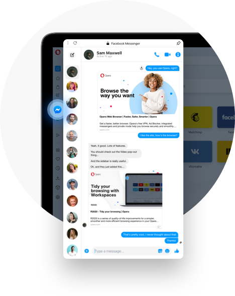

Como falar com alguém pelo Facebook?

01. No canto superior direito da tua conta do Facebook, clique em
02. Abra a conversa;
03. Na parte superior da conversa, clica em
04. Clique em criar grupo;
05. Escreva o nome da pessoa e selecione-o. Repita o processo para todas as pessoas que pretende adicionar;
06. Crie uma nova mensagem de grupo e envie-a.
Se não tem o Mensseger, Clique aqui para saber como baixar.

DESENVOLVIDO POR:
Sebastião Rone,Amanda Felix e Vyctor Moura